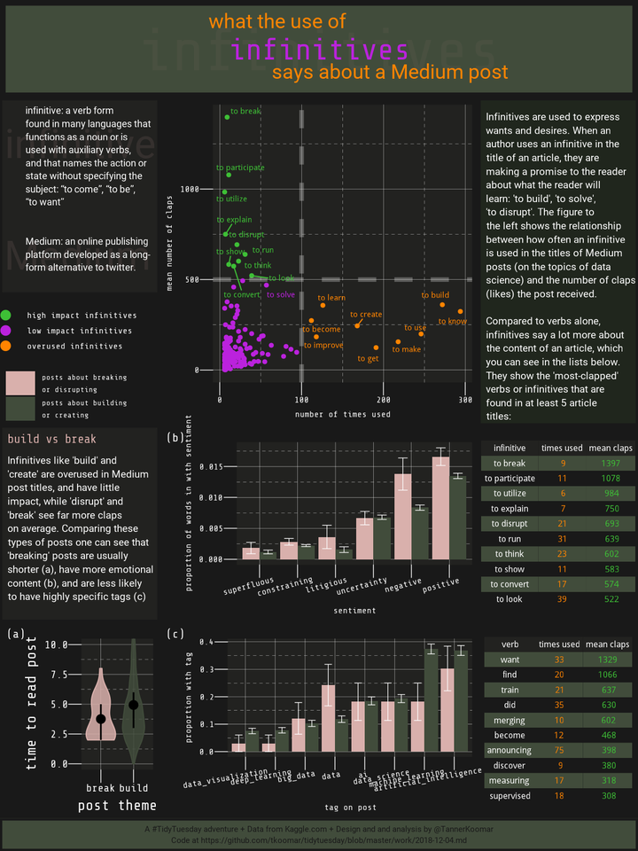
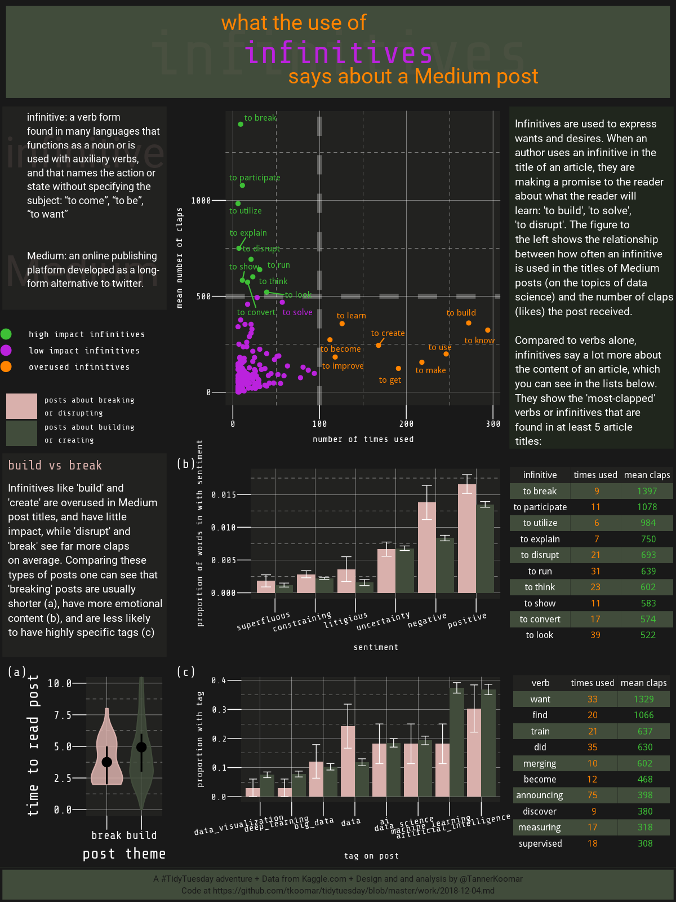

Tidy Tuesday: Infinitives in Medium Posts

Some light web-scraping and natual language processing reveals how different parts of speech may hint at an author’s intent (and impact).
Tidy the text
following along with this: https://cran.r-project.org/web/packages/tidytext/vignettes/tidytext.html
infinitives
dat_infin <- dat %>% unnest_tokens(infin, title, token = "ngrams", n = 2) %>%
filter(str_detect(pattern = "to ", string = infin)) %>%
mutate(word = str_remove(infin, "to ")) %>%
left_join(parts_of_speech) %>%
mutate(word_stem = wordStem(word, "english")) %>%
filter(str_detect(pos, regex("Verb", ignore_case = F)),
!duplicated(x1)) %>%
group_by(word_stem) %>%
mutate(n = n()) %>%
group_by(word_stem, n) %>%
summarize(mean_claps = mean(claps),
sum_claps = sum(claps),
infin = first(infin)
)
## Joining, by = "word"
all verbs
dat_verb <- dat %>% unnest_tokens(word, title) %>%
left_join(parts_of_speech) %>%
filter(str_detect(pos, regex("Verb", ignore_case = F)),
!duplicated(x1)) %>%
mutate(word_stem = wordStem(word, "english")) %>%
group_by(word_stem) %>%
mutate(n = n()) %>%
group_by(word_stem, n) %>%
summarize(mean_claps = mean(claps),
sum_claps = sum(claps),
word = first(word)
)
## Joining, by = "word"
some plots
scatter plots
plot_point_infin <- dat_infin %>%
filter(n > 5) %>%
ggplot(aes(x = n, y = mean_claps,
color = case_when(
mean_claps > 500 ~ "high impact infinitives",
n > 100 ~ "overused infinitives",
TRUE ~ "low impact infinitives"
),
label = case_when(
mean_claps > 500 | n > 100 ~ infin,
mean_claps > 200 & n > 50 ~ infin,
TRUE ~ "")
)
) +
scale_colour_manual(values = c(colors_merb[3], colors_merb[1], colors_merb[2]),
guide = guide_legend(title = NULL, override.aes = list(size = 4)) )+
geom_point() +
geom_vline(xintercept = 100,
lwd = 2,
lty = 2,
alpha = 0.3,
color = "grey90") +
geom_hline(yintercept = 500,
lwd = 2,
lty = 2,
alpha = 0.3,
color = "grey90") +
geom_text_repel(force = 15,
show.legend = FALSE) +
theme_merb() +
xlab("number of times used") +
ylab("mean number of claps") +
theme(
legend.text = element_text(size = 12),
legend.box.just = "right"
)
plot_point_infin

dat_verb %>%
filter(n > 5) %>%
ggplot(aes(x = n, y = mean_claps,
color = case_when(
mean_claps > 500 ~ "high_impact",
n > 100 ~ "overused",
TRUE ~ "misc"
),
label = case_when(
mean_claps > 500 | n > 100 ~ word,
mean_claps > 200 & n > 50 ~ word,
TRUE ~ ""))) +
scale_colour_manual(values = c(colors_merb[3], colors_merb[1], colors_merb[2])) +
geom_point() +
geom_vline(xintercept = 100,
lwd = 2,
lty = 2,
alpha = 0.3,
color = "grey90") +
geom_hline(yintercept = 500,
lwd = 2,
lty = 2,
alpha = 0.3,
color = "grey90") +
geom_text_repel(force = 15) +
theme_merb() +
xlab("number of times used") +
ylab("mean number of claps") +
theme(
legend.position = "none"
)

tables
gtable_theme <- ttheme_minimal(
core = list(fontfamily = "Share Tech Mono",
bg_params = list(fill = c("#414C3B", "#191919")),
fg_params = list(
col = matrix(c("white", colors_merb[2], colors_merb[3]),
nrow = 10,
ncol = 3,
byrow = T),
fontsize = 12
)
),
colhead = list(
bg_params = list(fill = "#222220"),
fg_params = list(col = "white",
fontsize = 12)
),
rowhead = list(),
default = list(),
padding = unit(c(2, 3), "mm")
)
infin_list <- dat_infin %>%
ungroup() %>%
filter(n > 5) %>%
arrange(desc(mean_claps)) %>%
select(infin, n, mean_claps) %>%
mutate(mean_claps = round(mean_claps)) %>%
rename("infinitive" = "infin",
"times used" = "n",
"mean claps" = "mean_claps") %>%
head(10) %>%
tableGrob(rows = NULL,
theme = gtable_theme
)
verb_list <- dat_verb %>%
ungroup() %>%
filter(n > 5) %>%
arrange(desc(mean_claps)) %>%
select(word, n, mean_claps) %>%
mutate(mean_claps = round(mean_claps)) %>%
rename("verb" = "word",
"times used" = "n",
"mean claps" = "mean_claps") %>%
head(10) %>%
tableGrob(rows = NULL,
theme = gtable_theme)
plot(infin_list)

plot(verb_list)

break vs build
dat_bb <- dat %>% unnest_tokens(infin, title, token = "ngrams", n = 2, drop = FALSE) %>%
filter(str_detect(pattern = "to ", string = infin)) %>%
filter(infin %in% c("to break", "to disrupt", "to destroy", "to create", "to make", "to build")) %>%
mutate(
type = case_when(
infin %in% c("to break", "to disrupt", "to destroy") ~ "break",
TRUE ~ "build"
)
)
topics / tags plot
plot_topic <- dat_bb %>%
gather(tag, tag_true, contains("tag_")) %>%
mutate(tag = str_remove(tag, "tag_")) %>%
group_by(type, tag) %>%
summarize(
tag_prop = mean(tag_true),
tag_sd = sd(tag_true),
tag_se = tag_sd/sqrt(n())
) %>%
ggplot(aes(
x = factor(tag) %>% reorder(tag_prop, FUN = mean),
y = tag_prop,
fill = type)
) +
geom_col(position="dodge", stat="identity") +
scale_fill_manual(values = c(pink, olive),
labels = c("posts about breaking\nor disrupting", "posts about building\nor creating"),
guide = guide_legend(title = NULL)) +
geom_errorbar(aes(ymin = tag_prop - tag_se, ymax = tag_prop + tag_se),
position = position_dodge(0.9),
size = 0.3,
width = 0.5,
color = "white"
) +
xlab("tag on post")+
ylab("proportion with tag") +
theme_merb() +
theme(
axis.text.x = element_text(hjust = .75, angle = 10)
)
## Warning: Ignoring unknown parameters: stat
plot_topic

time to (ha)rvest some posts!
read_post <- function(url){
tryCatch(
read_html(url, options = "NOERROR") %>%
html_nodes(".graf--p") %>%
html_text() %>%
str_flatten(" "),
error = function(e){NA},
warning = function(w){NA}
)
}
dat_bb <- dat_bb %>%
mutate(
full_text = map(url, read_post)
)
dat_bb <- unnest(dat_bb)
## don't want to have to repeat that later, so save it now
save(dat_bb, file = "2018-12-04_scraped_posts.RData")
sentiment plot
Not sure if stemming is needed here, given the way the sentiment dictionaries are constructed . . .
sent <- get_sentiments("loughran")
dat_sent <- dat_bb %>%
filter(!is.na(full_text)) %>%
unnest_tokens(word, full_text) %>%
left_join(sent)
## Joining, by = "word"
plot_sent <- dat_sent %>%
group_by(x1, sentiment, type) %>%
tally() %>%
group_by(x1) %>%
mutate(
proportion = n / sum(n)
) %>%
filter(!is.na(sentiment)) %>%
group_by(type, sentiment) %>%
summarise(
median_prop = median(proportion),
sd = sd(proportion),
se = (1.2533 * sd) / sqrt(n())) %>%
ggplot(aes(x = factor(sentiment) %>% reorder(median_prop),
y = median_prop,
fill = type)) +
geom_col(position = "dodge") +
scale_fill_manual(values = c(pink, olive)) +
geom_errorbar(aes(ymin = median_prop - se, ymax = median_prop + se),
position = position_dodge(0.9),
size = 0.3,
width = 0.5,
color = "white"
) +
xlab("sentiment")+
ylab("proportion of words in with sentiment") +
theme_merb() +
theme(axis.text.x = element_text(angle = 15, hjust = .75))
plot_sent

violin plot
plot_violin <- dat_bb %>%
ggplot(aes(x = type, y= reading_time, fill = type, color = type)) +
geom_violin(alpha = 0.85) +
coord_cartesian(ylim = c(0,10)) +
#geom_jitter(alpha = 0.3) + ## too busy
stat_summary(fun.y = mean,
fun.ymin = function(x){ quantile(x, probs = 0.25) },
fun.ymax = function(x){ quantile(x, probs = 0.75) },
size = 0.75, color = "black"
) +
xlab("post theme") +
ylab("time to read post") +
scale_fill_manual(values = c(pink, olive)) +
scale_color_manual(values = c(pink, olive)) +
theme_merb() +
theme(#legend.position = "none",
axis.text = element_text(size = 15),
axis.title = element_text(size = 20))
plot_violin

legend
plot_leg <- grid.arrange(cowplot::get_legend(plot_topic),
cowplot::get_legend(plot_point_infin),
widths = c(15, 85),
layout_matrix = rbind(c(3, 2),
c(3, 1))
)

text boxes
header
header <- ggplot() +
annotate(geom = "text",
y = 3.25,
x = 1,
size = 10,
hjust = .8,
family = "Roboto",
color = colors_merb_seq[2],
label = "what the use of"
) +
annotate(geom = "text",
y = 2,
x= 1,
size = 30,
family = "Share Tech Mono",
color = pink,
alpha = 0.05,
hjust = 0.5,
label="infinitives"
) +
annotate(geom = "text",
y = 2,
x= 1,
size = 15,
family = "Share Tech Mono",
color = colors_merb_seq[5],
hjust = 0.5,
label="infinitives"
) +
annotate(geom = "text",
y = 1,
x = 1,
size = 10,
family = "Roboto",
color = colors_merb_seq[2],
hjust = .2,
label = "says about a Medium post"
) +
ylim(0,4) +
theme_void() +
theme(
plot.background = element_rect(color = "#191919",
fill = olive,
size = 5)
)
header

definition sidebar
def_sidebar <- ggplot() +
ylim(-2,2) +
xlim(-2,2) +
annotate("text",
x = -2,
y = 1.5,
hjust = 0,
vjust = 1,
lineheight = 0.75,
family = "Roboto",
size = 20,
alpha = 0.1,
color = "#D9B0AC",
label = "infinitive") +
annotate("text",
x = -2,
y = -1,
hjust = 0,
vjust = 1,
lineheight = 0.75,
family = "Roboto",
size = 20,
alpha = 0.1,
color = "#D9B0AC",
label = "Medium") +
annotate("text",
x = -1.5,
y = 2,
hjust = 0,
vjust = 1,
lineheight = 0.75,
family = "Roboto",
size = 4.8,
color = "white",
label = paste0(
str_wrap("infinitive: a verb form found in many languages that functions as a noun or is used with auxiliary verbs, and that names the action or state without specifying the subject: “to come”, “to be”, “to want”", 29),
"\n", "\n", "\n",
str_wrap("Medium: an online publishing platform developed as a long-form alternative to twitter.", 29))
) +
theme_void() +
theme(
plot.background = element_rect(fill = "#222220" , color = "#191919", size = 2)
)
def_sidebar

top sidebar
top_sidebar <- ggplot() +
ylim(-2,2) +
xlim(-2,2) +
annotate("text",
x = -2,
y = 2,
hjust = 0,
vjust = 1,
lineheight = 0.75,
family = "Roboto",
size = 5,
color = "white",
label = paste0(
str_wrap("Infinitives are used to express wants and desires. When an author uses an infinitive in the title of an article, they are making a promise to the reader about what the reader will learn: 'to build', 'to solve', 'to disrupt'. The figure to the left shows the relationship between how often an infinitive is used in the titles of Medium posts (on the topics of data science) and the number of claps (likes) the post received.", 32),
"\n","\n",
str_wrap("Compared to verbs alone, infinitives say a lot more about the content of an article, which you can see in the lists below. They show the 'most-clapped' verbs or infinitives that are found in at least 5 article titles:", 32)
)
)+
theme_void() +
theme(
plot.background = element_rect(fill = "#20261d" , color = "#191919", size = 2)
)
top_sidebar

bottom sidebar
bot_sidebar <- ggplot() +
ylim(-2,2) +
xlim(-2,2) +
annotate("text",
x = -2,
y = 2,
hjust = 0,
vjust = 1,
lineheight = 0.75,
family = "Share Tech Mono",
size = 6,
color = "#D9B0AC",
label = "build vs break"
) +
annotate("text",
x = -2,
y = 1.5,
hjust = 0,
vjust = 1,
lineheight = 0.75,
family = "Roboto",
size = 5,
color = "white",
label = paste0(
str_wrap("Infinitives like 'build' and 'create' are overused in Medium post titles, and have little impact, while 'disrupt' and 'break' see far more claps on average. Comparing these types of posts one can see that 'breaking' posts are usually shorter (a), have more emotional content (b), and are less likely to have highly specific tags (c)", 32)
)
) +
theme_void() +
theme(
plot.background = element_rect(fill = "#222220" , color = "#191919", size = 2)
)
bot_sidebar

footer
footer <- ggplot() +
ylim(-2,2) +
xlim(-2,2) +
annotate("text",
x = 0,
y = 0,
hjust = .5,
vjust = .5,
lineheight = 0.75,
family = "Roboto",
size = 4,
color = "#191919",
label = paste0(
"A #TidyTuesday adventure + Data from Kaggle.com + Design and and analysis by @TannerKoomar",
"\n",
"Code at https://github.com/tkoomar/tidytuesday/blob/master/work/2018-12-04.md"
)
) +
theme_void() +
theme(
plot.background = element_rect(fill = olive , color = "#191919", size = 2)
)
footer

stitch it together
png("2018-12-04_final_plot.png", width = 1200, height = 1600, res = 144, bg = "#191919")
grid.arrange(header,
def_sidebar,
plot_point_infin + theme(legend.position = 'none'),
top_sidebar,
plot_leg,
infin_list,
verb_list,
plot_violin + theme(legend.position = 'none') + labs(tag = "(a)"),
plot_sent + theme(legend.position = 'none') + labs(tag = "(b)"),
plot_topic + theme(legend.position = 'none')+ labs(tag = "(c)"),
bot_sidebar,
footer,
heights = c(15, 30, 20, 30, 30, 5),
layout_matrix = rbind(c(1,1,1,1),
c(2,3,3,4),
c(5,3,3,4),
c(11,9,9,6),
c(8,10,10,7),
c(12,12,12,12))
)
dev.off()
## png
## 2
The final Plot

Tanner Koomar
PhD Candidate
My research interests include computational genetics, machine learning and science communication